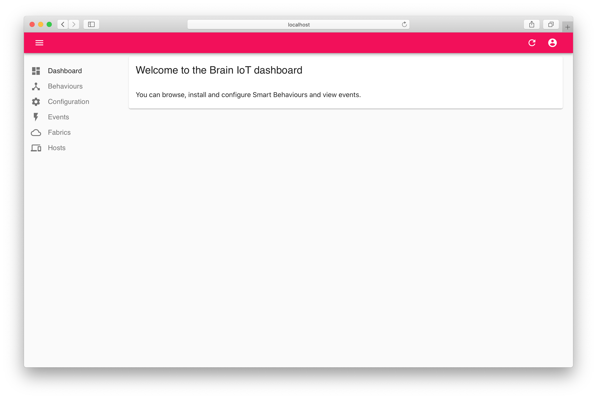
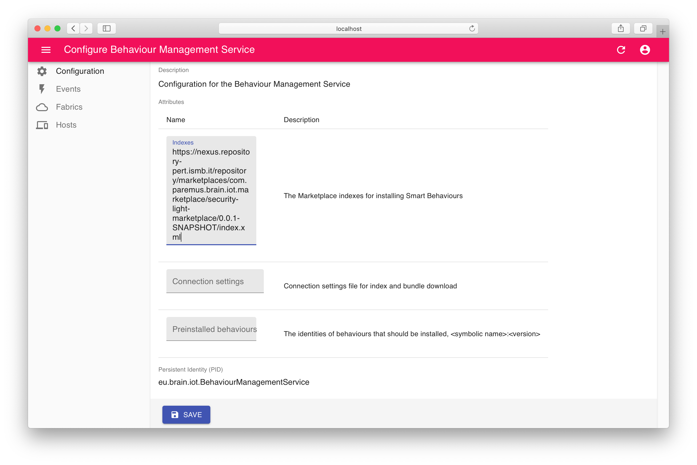
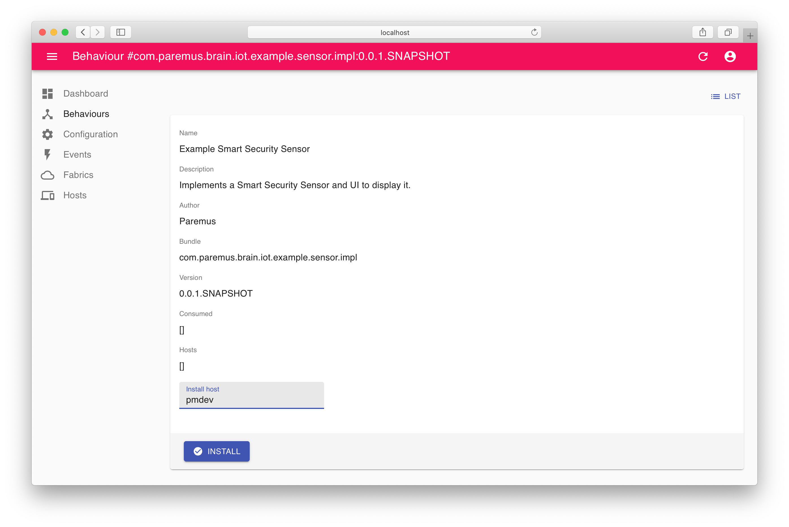
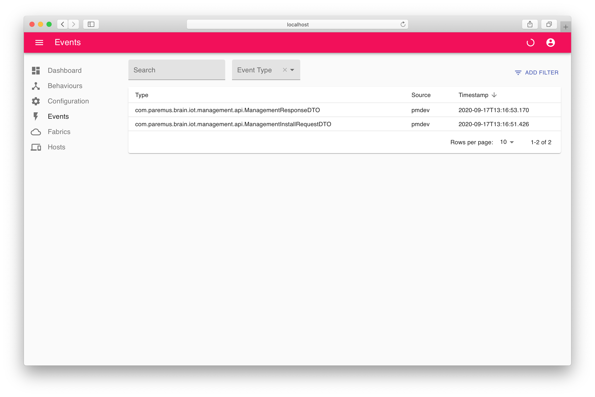
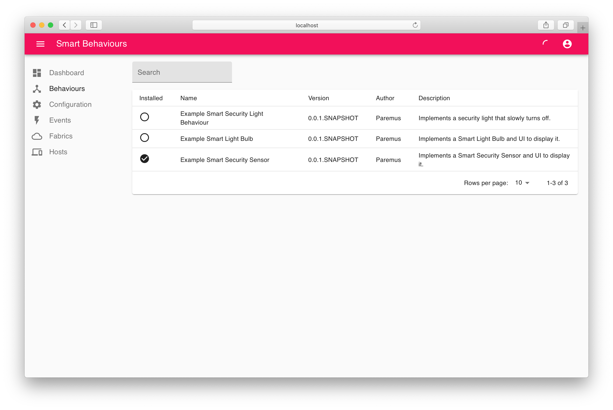
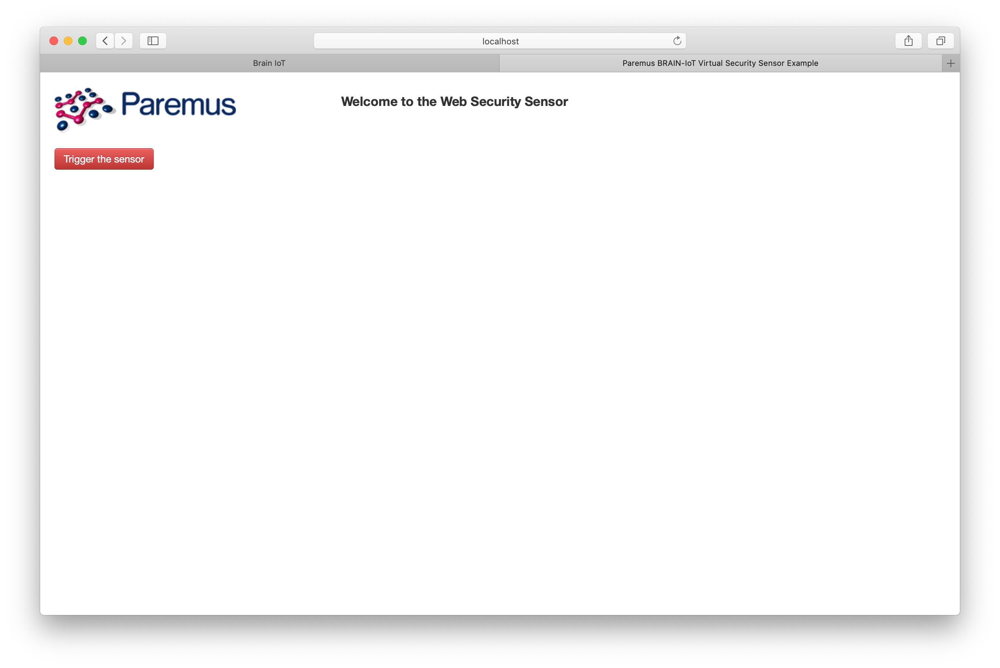
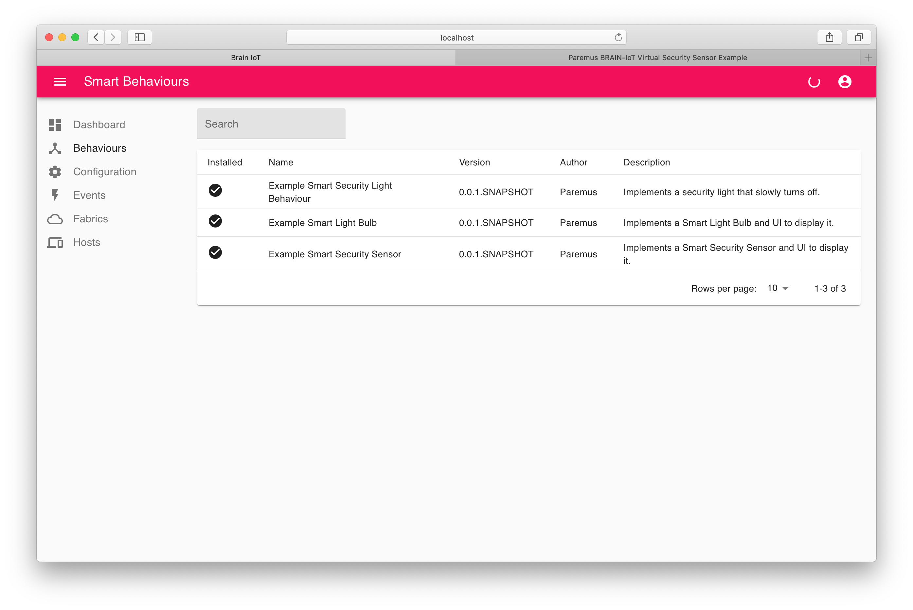
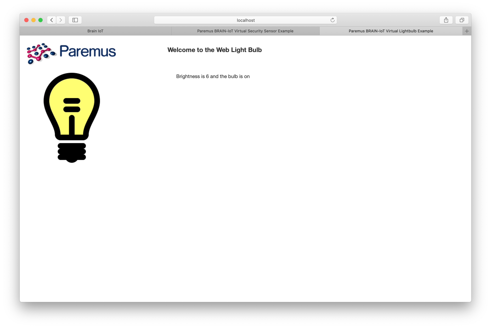
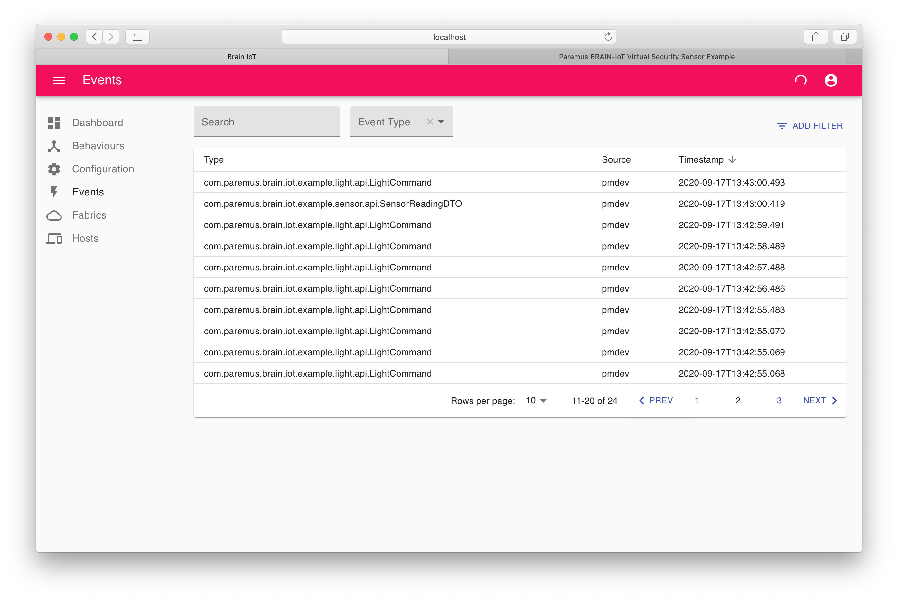

Quick Start
Summary
In this tutorial we’ll first run the BRAIN-IoT core services in a single container, and then use the BRAIN-IoT UI to install and run the Security Light Example, which contains 3 Smart Behaviours.
BRAIN-IoT uses a distributed archtecture, but it’s much faster to deploy it in a single container first. The Distributed Deployment tutorial covers deploying a distributed BRAIN-IoT system.
Run Core Services
We start by first downloading and then running the core BRAIN-IoT services in a single container . This will also confirm that your local environment meets the required prerequisites.
Download
The admin-user-interface git repository contains a useful app.test that runs a whole BRAIN-IoT system in a single container.
Clone the brain-iot-admin-user-interface from GitLab and change directory into brain-iot-admin-user-interface.
~ $ git clone https://github.com/eclipse-researchlabs/brain-iot-admin-user-interface.git
~ $ cd brain-iot-admin-user-interface
Build
Build with the following command:
~/brain-iot-admin-user-interface $ mvn install
Run
app.test/app.bndrun defines an application containing the BRAIN-IoT core services and UI.
-standalone: target/index.xml
-resolve.effective: active
-runfw: org.apache.felix.framework
-runee: JavaSE-11
# marketplace indexes for Behaviour Management System
remoteLight=https://nexus.repository-pert.ismb.it/repository/marketplaces/com.paremus.brain.iot.marketplace/security-light-marketplace/0.0.1-SNAPSHOT/index.xml
# (assumes marketplace is checked out next to this project)
localLight=file://${.}/../../marketplace/security-light-marketplace/target/marketplace/index.xml
# empty indexes allows user to configure in UI/config
mktplIndexes=
-runvm: -ea,\
-Dorg.slf4j.simpleLogger.defaultLogLevel=debug,\
-Dlogback.configurationFile=${.}/logback.xml,\
-Djava.util.logging.config.file=${.}/logging.properties,\
-Dorg.apache.felix.http.requestlog.file.path=./request.log,\
-Dcom.paremus.brain.iot.ui.bms.indexes=${mktplIndexes},\
-Dorg.osgi.service.http.port=8081
# javascript client is embedded in admin-server
# setting this property allows testing with non-embedded version
##-Dcom.paremus.ui.client.dir=${.}/.../js_client/build-dev
#-runtrace: true
-runprovidedcapabilities: ${native_capability}
-runsystempackages: sun.reflect
# Bnd doesn't know that we're using these remotely:
-runsystemcapabilities: \
osgi.service;objectClass=com.paremus.brain.iot.management.api.BehaviourManagement,\
osgi.service;objectClass=org.osgi.service.resolver.Resolver
-runrequires: \
bnd.identity;id='com.paremus.brain.iot.eventing.impl',\
bnd.identity;id='com.paremus.brain.iot.management.impl',\
bnd.identity;id='com.paremus.ui.metaconfig',\
bnd.identity;id='com.paremus.brain.iot.ui.rest.app',\
bnd.identity;id='com.paremus.ui.rest.config',\
bnd.identity;id='com.paremus.ui.client'
debug:\
org.apache.felix.webconsole;version='[4.3.12.all,4.3.12.all]',\
org.apache.felix.webconsole.plugins.ds;version='[2.1.0,2.1.1]',\
org.apache.felix.log;version='[1.2.2,1.2.3)',\
org.apache.felix.gogo.command;version='[1.0.2,1.0.3)',\
org.apache.felix.gogo.runtime;version='[1.0.10,1.0.11)',\
org.apache.felix.gogo.jline;version='[1.0.10,1.0.11)',\
org.jline;version='[3.5.1,3.5.2)'
# after resolve add ${debug} if required
-runbundles: \
ch.qos.logback.classic;version='[1.2.3,1.2.4)',\
ch.qos.logback.core;version='[1.2.3,1.2.4)',\
com.fasterxml.jackson.core.jackson-annotations;version='[2.9.0,2.9.1)',\
com.fasterxml.jackson.core.jackson-core;version='[2.9.8,2.9.9)',\
com.fasterxml.jackson.core.jackson-databind;version='[2.9.8,2.9.9)',\
com.fasterxml.jackson.jaxrs.jackson-jaxrs-base;version='[2.9.8,2.9.9)',\
com.fasterxml.jackson.jaxrs.jackson-jaxrs-json-provider;version='[2.9.8,2.9.9)',\
com.fasterxml.jackson.module.jackson-module-jaxb-annotations;version='[2.9.8,2.9.9)',\
com.paremus.brain.iot.eventing.api;version='[0.0.1,0.0.2)',\
com.paremus.brain.iot.installer.api;version='[0.0.1,0.0.2)',\
com.paremus.brain.iot.management.api;version='[0.0.1,0.0.2)',\
com.paremus.brain.iot.ui.rest.app;version='[0.0.1,0.0.2)',\
com.paremus.ui.rest;version='[1.0.0,1.0.1)',\
jaxb-api;version='[2.2.11,2.2.12)',\
org.apache.aries.javax.jax.rs-api;version='[1.0.4,1.0.5)',\
org.apache.aries.jax.rs.shiro.authz;version='[1.0.2,1.0.3)',\
org.apache.aries.jax.rs.whiteboard;version='[1.0.4,1.0.5)',\
org.apache.commons.commons-configuration2;version='[2.5.0,2.5.1)',\
org.apache.commons.commons-text;version='[1.6.0,1.6.1)',\
org.apache.commons.lang3;version='[3.9.0,3.9.1)',\
org.apache.commons.logging;version='[1.2.0,1.2.1)',\
org.apache.felix.converter;version='[1.0.8,1.0.9)',\
org.apache.felix.http.jetty;version='[4.0.8,4.0.9)',\
org.apache.felix.http.servlet-api;version='[1.1.2,1.1.3)',\
org.apache.servicemix.specs.annotation-api-1.3;version='[1.3.0,1.3.1)',\
org.apache.servicemix.specs.jaxws-api-2.2;version='[2.9.0,2.9.1)',\
org.apache.servicemix.specs.saaj-api-1.3;version='[2.9.0,2.9.1)',\
org.apache.shiro.core;version='[1.4.0,1.4.1)',\
org.apache.shiro.web;version='[1.4.0,1.4.1)',\
org.osgi.service.jaxrs;version='[1.0.0,1.0.1)',\
org.osgi.util.pushstream;version='[1.0.0,1.0.1)',\
slf4j.api;version='[1.7.25,1.7.26)',\
com.paremus.brain.iot.eventing.impl;version='[0.0.1,0.0.2)',\
com.paremus.brain.iot.installer.impl;version='[0.0.1,0.0.2)',\
com.paremus.brain.iot.management.impl;version='[0.0.1,0.0.2)',\
com.paremus.brain.iot.message.integrity.api;version='[0.0.1,0.0.2)',\
com.paremus.brain.iot.message.integrity.insecure.impl;version='[0.0.1,0.0.2)',\
com.paremus.brain.iot.resolver.impl;version='[0.0.1,0.0.2)',\
org.osgi.service.log;version='[1.4.0,1.4.1)',\
com.github.oshi.oshi-core;version='[4.2.1,4.2.2)',\
com.sun.jna;version='[5.5.0,5.5.1)',\
com.sun.jna.platform;version='[5.5.0,5.5.1)',\
org.apache.felix.metatype;version='[1.2.2,1.2.3)',\
org.apache.felix.configadmin;version='[1.9.16,1.9.17)',\
org.apache.felix.scr;version='[2.1.16,2.1.17)',\
org.apache.geronimo.specs.geronimo-activation_1.1_spec;version='[1.1.0,1.1.1)',\
biz.aQute.bndlib;version='[4.3.0,4.3.1)',\
biz.aQute.repository;version='[4.3.0,4.3.1)',\
com.paremus.ui.client;version='[1.0.0,1.0.1)',\
com.paremus.ui.metaconfig;version='[1.0.0,1.0.1)',\
com.paremus.ui.rest.config;version='[1.0.0,1.0.1)',\
org.apache.aries.jax.rs.jackson;version='[1.0.2,1.0.3)'It can be started with the bnd run command:
~/brain-iot-admin-user-interface $ bnd run app.test/app.bndrun
[INFO] Started Jetty 9.4.15.v20190215 at port(s) HTTP:8081 on context path / [minThreads=8,maxThreads=200,acceptors=1,selectors=4]
The console will contain more output than shown above. When you want to terminate the application press Ctrl+C.
Explore BRAIN-IoT UI
Browse to http://localhost:8081, where you should see the BRAIN-IoT UI. Login with username admin and password admin:

Configure marketplace
Click on the Events tab and you’ll see that no events are found.
Click on the Behaviours tab and you’ll see that no behaviours are found.
This is because the Behaviour Management Service (BMS) has not been configured with any marketplace artifacts. So we’ll configure it with the marketplace for the Security Light Example, which is deployed in Nexus.
Click on the Configuration tab and then Behaviour Management Service then copy the security light marketplace URL into the Indexes field and save the configuration:

Click on the Behaviours tab again and you’ll now see the Security Light Example behaviours:.
Install Smart Behaviour
Click on the Example Smart Security Sensor and then click in the Install host field. Select the only host and click INSTALL:

Click on the Events tab and you should see two events for installation:

Now click back to the Behaviours tab and you’ll see the Example Security Sensor is installed:

Security Light Example
We’re now ready to run through the Security Light Example.
It consists of a sensor, a light and a controller, all implemented as BRAIN-IoT Smart Behaviours. The sensor and light are ‘virtual’ and implemented as web pages.
When the sensor is activated it sends an event to the controller. The controller then sends a series of events to the light which cause it to switch on brightly and then slowly dim.
We have currently only installed the sensor.
We will show that when the sensor is activated, the BMS will detect the unhandled event for the controller and automatically install the appropriate behaviour from the marketplace.
Similarly, when the controller sends an event to the light, the BMS will automatically install the light behaviour from the marketplace.
Trigger Example Sensor
So let’s get started!
Browse to http://localhost:8081/example/sensor-ui/index.html, where you should see the Example Sensor webpage:

Click Trigger the sensor.
Switch back to the main BRAIN-IoT UI and click the Behaviours tab. You should see that all behaviours are now installed (you may need to refresh page):

Observe Example Light bulb
Browse to http://localhost:8081/example/light-ui/index.html, where you should see the Example Light Bulb webpage:

If you missed it being lit up, then just click Trigger the sensor again and then switch back to the light webpage.
Observe Events
Now switch back to the main BRAIN-IoT UI and click the Events tab. You should see lots of events, specifically SensorReadingDTO which is sent from the sensor and LightCommand which is sent from the controller:

End
That completes this tutorial.
To terminate the application press Ctrl+C in the terminal window.
Prev Next